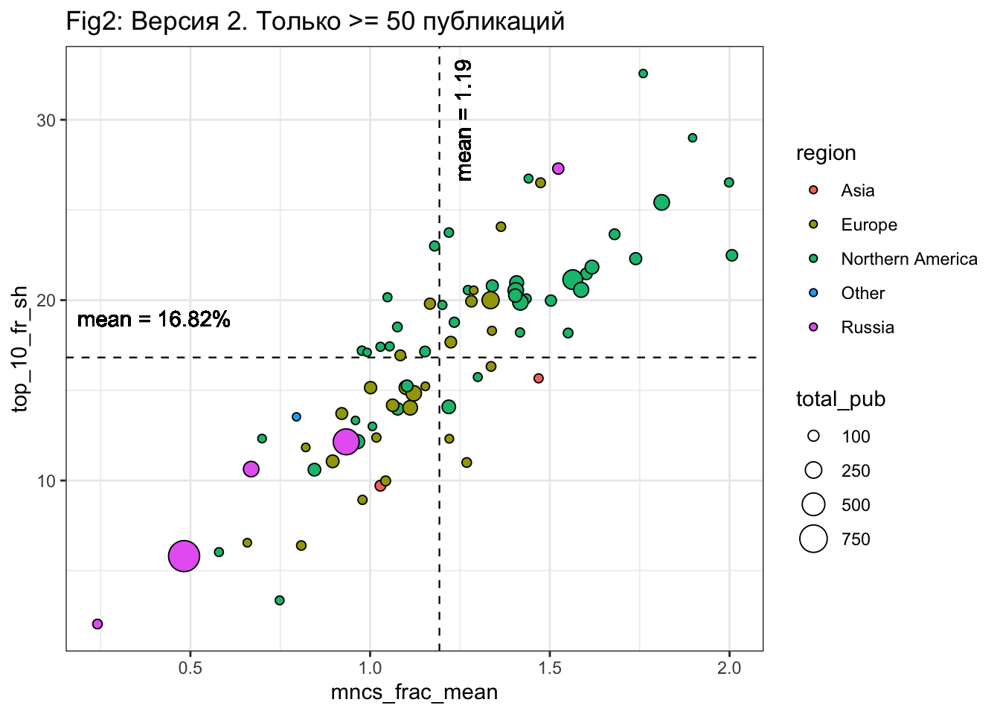

III. INSTITUTIONS
Раздел основан на data_website_original.xlsx, а точнее на фрaкционализованном датасете на основе data_website_original.xlsx
Унификация связки organisation_full - region - country была осуществлена через вменение моды
(1) Страны и организации
Можно взять 15 стран с наибольшим вкладом. Указывается количество организаций и количество публикаций, а также процент от количества всего организаций и публикаций.
(2) Топ-институций в виде графика
- Первый вариант графика: Давайте попробуем график со всеми точками, цветом как вы предложили > 50 и < 50. Размер кружка можно попробовать по количеству публикаций. Поделить на квадранты по средним график и показывать среднее цифрами. Из правого верхнего квадранта дать названия 10 университетам с наибольшим % в 10% публикаций.
квадрантили сделаны средними ПО ВСЕМ ИНСТИТУЦИЯМ. пока график интерактивный, красивые статичные лейблы буду рисовать руками. сейчас всплывают все названия организаций и коорединаты по которым они построены, а так же число статей у красных точек, чтобы удобно было писать текст. Все подписи / размеры / буду делать в статике после того как мы выберем окончательный вид графика
- Второй вариант графика. Оставить только организации с 50> публикаций. Остальное все тоже самое. Цветом можно регион попробовать показать.
квадрантили сделаны средними на основе институций, где > 50 публикаций. так будет выглядеть раскраска по регионам

(3) Топ-институций
сами значения показателей в виде таблицы. Взять университеты, которые одновременно выше среднего по 2 нашим показателям.
среднее для двух показателей, с которыми будем сравнивать (их же мы видим как mean на рис Версия 1)
| mean(top_10_fr_sh) | mean(mncs_frac_mean) |
|---|---|
| 14.07965 | 1.04053 |
(4) Организации и динамика их вклада.
Взять наш топ организаций и показать, как по периодам (у нас их три) распределяются статьи. Мы отвечаем насколько заслуги распределены между периодами. Нет ли историй у которых были бы полностью заслуги в прошлом, но есть новички. 1990-2020 % pubs of total – это доля публикация организации взятая от всех публикаций в датасете Далее 3 колонки доля уже от 1990-2020 N pubs самой организации. Возможно лучше давать N и долю в скобках.
На всем датасете дать такие цифры: для каждого нашего региона посчитать среднее как для всех организаций распределяются по 3 периодам публикации. То есть будет цифра для North America сколько в среднем для ее организаций процентов публикаций вышло в первом, втором и третьем периоде.
| Col1 | Col2 | Col3 | Col4 | Col5 | Col6 | Col7 |
|---|---|---|---|---|---|---|
| Organizations | Country | 1990-2020 N pubs | 1990-2020 % pubs of total | 1990-2000 % | 2001-2010 % | 2011-2020 % |
(5) Топ организаций специализируется ли на чем-то одном?
В колонке указать – название области, по которой больше всего статей (2 и 3 место также), количество статей по этой области и доля публикаций от числа публикаций этой организации - name,N and %ю
| Col1 | Col2 | Col3 | Col4 | Col5 | Col6 | Col7 |
|---|---|---|---|---|---|---|
| Organizations | Country | SSHI (N and %) | AHCI (N and %) | 1 most prevalent research area (name, N and %) | 2 most prevalent research area (name,N and %) | 3 most prevalent research area (name, N and %) |
(6) По всем ли периодам был одинаковый топ?
Если попробовать разбить датасет по нашим периодам и по нашему алгоритму найти для каждого периода свой список вузов, которые попали в четвертый квадрат (выше среднего и по нормализованной цитируемости и по доле публикаций в 10%). Тогда результат вот так можно представить. И может быть подсветить цветом название вуза (из числа наших топов за весь период), если он был в этот период в топе.
| Col1 | Col2 | Col3 | Col4 |
|---|---|---|---|
| 1990-2020 | 1990-2000 | 2001-2010 | 2011-2020 |
И еще нужна такая простая табличка. Дать список наших университетов и сколько раз они попали в топ за три периода (то есть максимальное количество 3 должно быть).
| Col1 | Col2 |
|---|---|
| Organizations (top, 1990-2020) | N times in top |